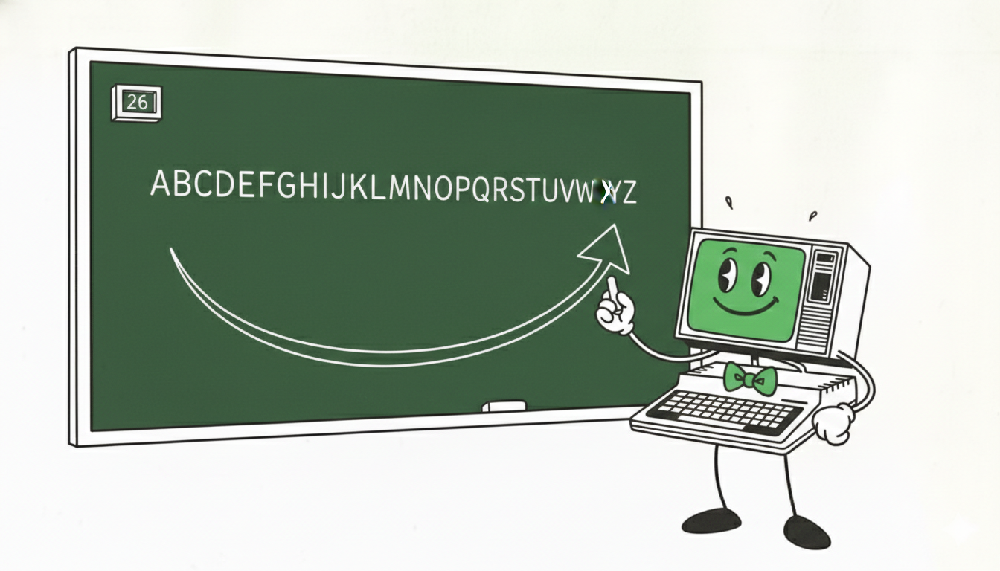
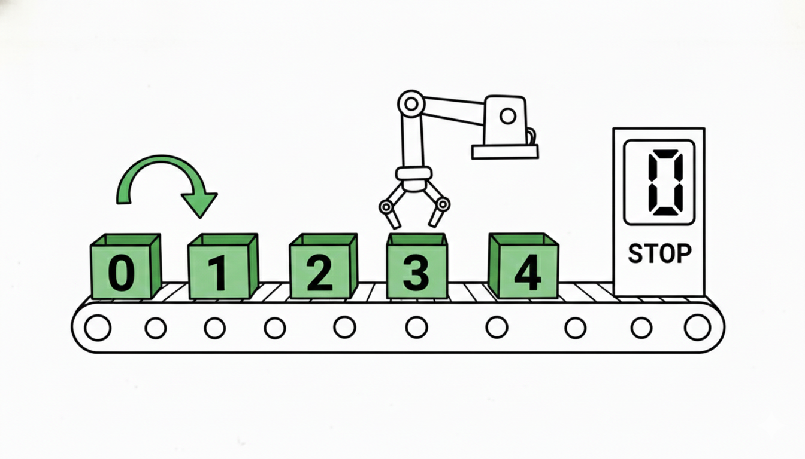

Suppose you want to print every letter from A to Z. With what you know so far, you'd write:
: LETTER CHAR A + EMIT ; 0 LETTER 1 LETTER 2 LETTER 3 LETTER 4 LETTER 5 LETTER 6 LETTER 7 LETTER ...
That's 26 separate calls — and if you change your mind about which letters to print, you change 26 lines. There has to be a better way.
The better way is a counted loop. You give it a start and an end, and it repeats the body automatically, giving you a fresh index each time.

The basic form is:
DO pops limit and start from
the stack. The body runs once for each value from
start up to — but not including — limit.
LOOP increments the counter and either branches
back or falls through.
To print the first five letters:
: LETTER CHAR A + EMIT ; 5 0 DO I LETTER LOOP
This runs the body five times with index 0, 1, 2, 3, 4 — printing A, B, C, D, E.
Inside a DO … LOOP, the word I
copies the current loop index onto the data stack. It
doesn't consume anything — it just lets the body
see which iteration is running.
Push the current loop index. Valid only inside a
DO … LOOP.
Because I pushes a number, you can use it in
any arithmetic expression — add it to a base character code,
subtract it from a limit, or pass it to any word that
expects a number.
I is read-only. You can look at the loop
counter but you can't change it from inside the loop body.
The counter always advances by exactly 1 each time
LOOP executes.
Let's trace the first two iterations of
5 0 DO I LETTER LOOP:
| Step | Data stack | Loop index |
|---|---|---|
| 5 0 | ( 0 5 ) | — |
| DO | ( ) | 0 |
| I | ( 0 ) | 0 |
| LETTER → emits A | ( ) | 0 |
| LOOP → index++ | ( ) | 1 |
| I | ( 1 ) | 1 |
| LETTER → emits B | ( ) | 1 |
| LOOP → index++ | ( ) | 2 |
| … | … | … |
| LOOP (index=5) | ( ) | done |
When LOOP increments the index to 5, it equals
the limit, so the loop exits. Five letters print, then
execution continues after LOOP.
With a limit of 26:
: ALPHA 26 0 DO I LETTER LOOP ;
The body runs with index 0, 1, 2, … 25.
I LETTER adds the index to
CHAR A (65) and emits the result:
A (65), B (66), … Z (90). One definition; 26 letters.
Because I puts a plain number on the stack,
you can do arithmetic on it. To print Z down to A, count the
offsets from the other end:
: BACKW 26 0 DO 25 I - LETTER LOOP ;
When I is 0: 25 - 0 = 25 → Z.
When I is 1: 25 - 1 = 24 → Y.
When I is 25: 25 - 25 = 0 → A.
The key is stack order: 25 is pushed first, so
it sits below I. The word -
computes NOS−TOS, which is 25 - I.
Keep track of which value is TOS and which is NOS before
a subtract. 25 I - gives 25−I.
I 25 - would give I−25 — a negative
number that would wrap around the character table.
\ Chapter 6 example — Count and Loop : LETTER CHAR A + EMIT ; : ALPHA 26 0 DO I LETTER LOOP ; \ A→Z : BACKW 26 0 DO 25 I - LETTER LOOP ; \ Z→A : MAIN ALPHA CR BACKW CR ; MAIN HALT
Two lines, each produced by a single word call. No manual repetition; the loop does all the work.
ALPHA.
What five letters print?
BACKW yourself before looking at the
example. What does 25 I - compute when
I is 10?
ALPHA twice inside MAIN.
Another: change the limit and use math on
I. Try both.
0 0 DO I LETTER LOOP?
Think about it first — does the body run once, or never?
n 0 DO … LOOP for 0-based count
I as an offset into a table or alphabet
Arithmetic on I to reverse or scale
Combining loops with word definitions
Loop runs from start up to (not including) limit
Index lives on the return stack, not data stack
I copies it; the loop still advances
One loop = many repetitions with one definition